Adding and changing fills
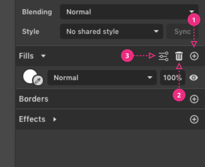
(1) Add a fill to a selected shape (shapes can have multiple, layered fills)
(2) Remove the selected fill
(3) Advanced Fill Settings (for the selected fill)
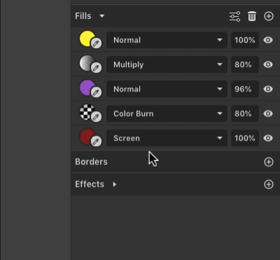
If you click on the empty area of the fill interface, you can select the fill. You can also drag fills to re-order them for shapes with multiple layered fills.
The clickable area is highlighted in lighter gray and pink
It is also possible to copy a fill and paste it on the same element or on a different element in the same document. This can be done using Ctrl/Cmd+C or Ctrl/Cmd+V, or by using the context menu with a right-click on the fill. The option to delete the fill is also present in the context menu.
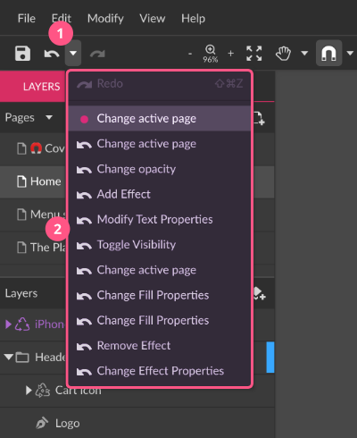
Fill controls
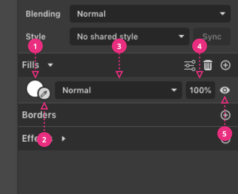
(1) Click once on the fill preview circle to change the fill type (solid color, gradients, etc…) and properties
(2) Color picker eyedropper – pick a color from anywhere on the canvas
(3) Blending mode – blending mode for this fill only
(4) Opacity (percentage) for this fill only
(5) Visibility (on/off) – hide/show this specific fill
Here is a Color Picker eyedropper in action:
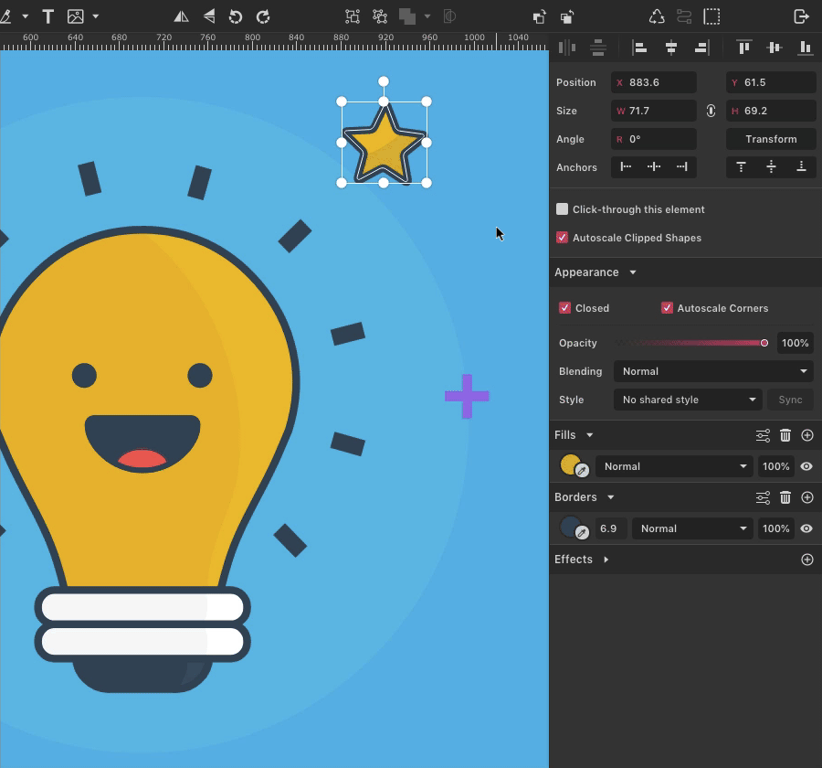
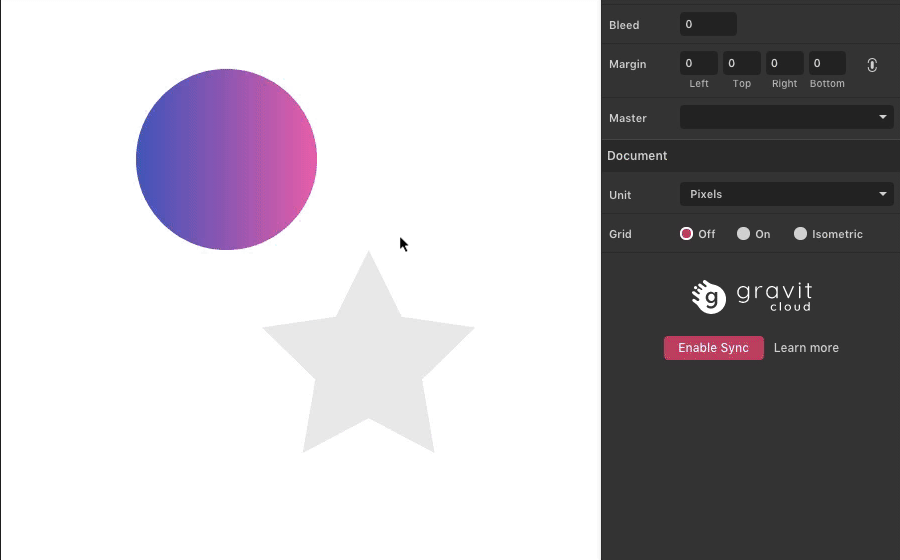
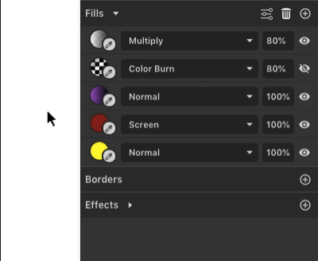
Advanced fill settings
Fill rules
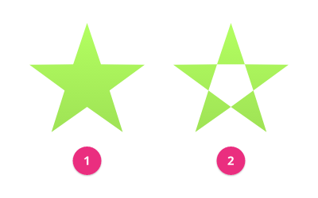
Fills have two (winding) fill rules which define how holes are calculated:
- Non-Zero (Fill Holes) – Internal enclosed areas are NOT regarded as holes
- Even-Odd (Keep Holes) – Internal enclosed areas ARE regarded as holes
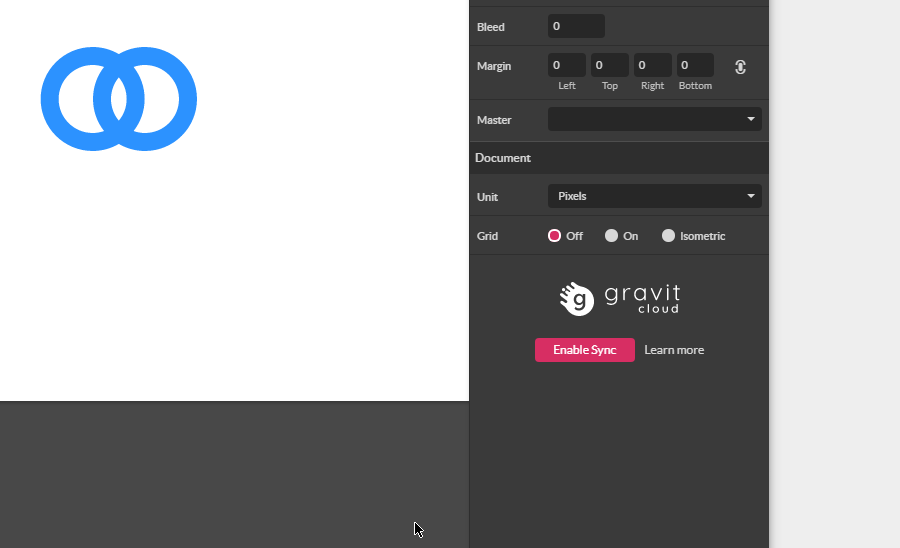
Multiple layered fills
Gravit Designer lets you add multiple fills to the same shape, which is a very useful feature.
These fills can be layered and combined by using opacity and blending modes. Here is an example of a single ellipse with multiple fills:
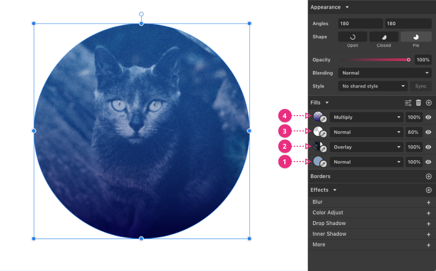
(1) Single color fill as a base
(2) Added an Image (Texture) fill, set to Overlay
(3) Added a Noise fill, with Opacity set to 80%
(4) Added a Gradient fill, set to Multiply
Then you can simply select any vector object and use Paste +
Eyedropper tool
The Eyedropper tool in the Color Picker lets you change the color by picking a new one from the document.
- Click once on the Eyedropper icon next to the Color preview, or click the Eyedropper icon within the Color Picker.
- Move your cursor over the document to choose a color. When the selector square (in the middle of the magnified view) is over the color you want, click once to pick that color.
- Use the key to cancel Eyedropper mode.
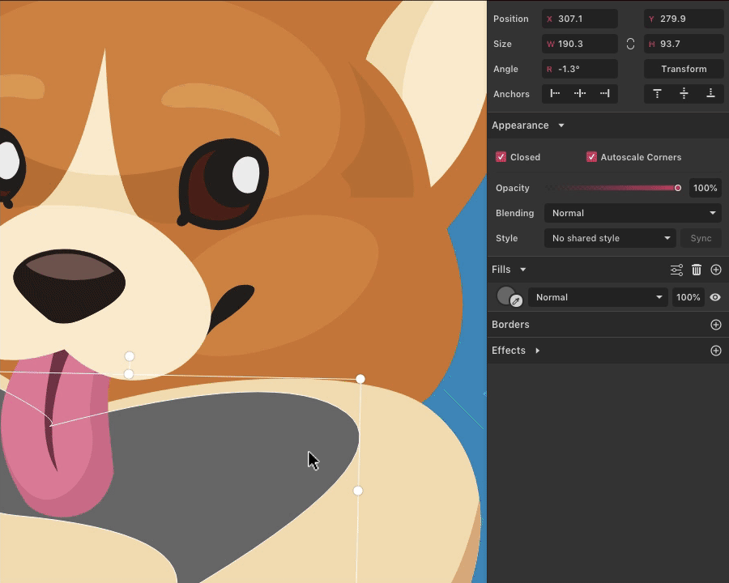